LAPORAN SISTEM OPERASI
Tugas 4A-Proses dan Manajemen Proses
TI-1D-09
TUGAS PENDAHULUAN :
Jawablah pertanyaan-pertanyaan di bawah ini :
- Apa yang dimaksud dengan proses ?
- Apa yang dimaksud perintah untuk menampilkan status proses :
ps, pstree. - Sebutkan opsi yang dapat diberikan pada perintah ps
- Apa yang dimaksud dengan sinyal ? Apa perintah untuk mengirim sinyal ?
- Apa yang dimaksud dengan proses foreground dan background pada job control ?
- Apa yang dimaksud perintah-perintah penjadwalan prioritas :
top, nice, renice.Jawaban:
- proses adalah urutan pelaksanaan atau kejadian yang saling terkait yang bersama-sama mengubah masukan menjadi keluaran.
- ps digunakan untuk melihat proses yang ada sedangkan pstree digunakan untuk menampilkan semua proses pada sistem dalam bentuk hirarki parent/child.
ps, ps -u, ps -u <user>, ps -a, ps -au, ps -eH, ps -e f, pstree, pstree | grep mingett, pstree -p, pstree -h, ps -e | more, ps ax | more, ps ef | more, ps -eo pid, cmd | more, ps -eo pid,ppid
Percobaan 1 : Status Proses
- Pindah ke command line terminal (tty2) dengan menekan Ctrl+Alt+F2 dan login ke terminal sebagai user.
- Instruksi ps (process status) digunakan untuk melihat kondisi proses yang
ada. PID adalah Nomor Identitas Proses, TTY adalah nama terminal dimana
proses tersebut aktif, STAT berisi S (Sleepin g) dan R (Running), COMMAND
merupakan instruksi yang digunakan.
$ ps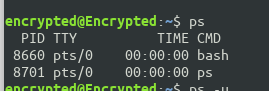 - Untuk melihat faktor/elemen lainnya, gunakan option –u (user). %CPU
adalah presentasi CPU time yang digunakan oleh proses tersebut, %MEM
adalah presentasi system memori yang digunakan proses, SIZE adalah jumlah
memori yang digunakan, RSS (Real System Storage) adalah jumlah memori
yang digunakan, START adalah kapan proses tersebut diaktifkan
$ ps -u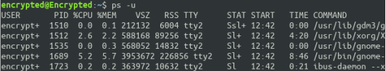 - Mencari proses yang spesifik pemakai. Proses diatas hanya terbatas pada
proses milik pemakai, dimana pemakai teresbut melakukan login
$ ps –u <user>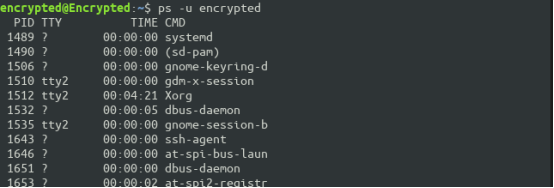 10.Mencari proses lainnya gunakan opsi a (all) dan au (all user)$ ps –a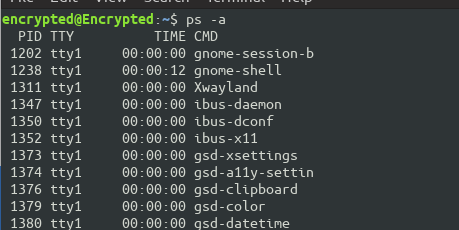$ ps –au11.Logout dan tekan Alt+F7 untuk kembali ke mode grafis
Percobaan 2 : Menampilkan Hubungan Proses Parent dan Child
- Pindah ke command line terminal (tty2) dengan menekan Ctrl+Alt+F2 dan login ke terminal sebagai user.
- Ketik ps –eH dan tekan Enter. Opsi e memilih semua proses dan opsi H
menghasilkan tampilan proses secara hierarki. Proses child muncul dibawah
proses parent. Proses child ditandai dengan awalan beberapa spasi.
$ ps -eH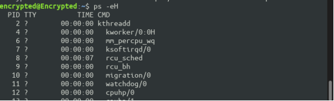 5.Ketikps –e fdan tekan Enter. Tampilan serupa dengan langkah 2. Opsi–fakan menampilkan status proses dengan karakter grafis (\ dan _)$ ps –e f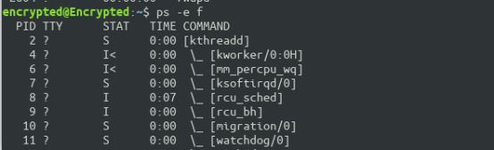 - Ketik pstree dan tekan Enter . Akan ditampilkan semua proses pada sistem dalam bentuk hirarki parent/child. Proses parent di sebelah kiri proses child. Sebagai contoh proses init sebagai parent (ancestor) dari semua proses pada sistem. Beberapa child dari init mempunyai child. Proses login mempunya i proses bash sebagai child. Proses bash mempunyai
- proses child startx .
- Proses startx mempunyai child
xinit dan seterusnya.
$ pstree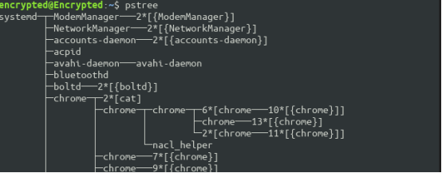Ketik pstree | grep mingetty dan tekan Enter.Akan menampilkan semua proses mingetty yang berjalan pada system yang berupa console virtual. Selain menampikan semua proses, proses dikelompokkan dalam satu baris dengan suatu angka sebagai jumlah proses yang berjalan.
$ pstree | grep mingetty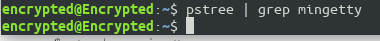Untuk melihat semua PID untuk proses gunakan opsi –p. $ pstree –p
Untuk menampilk an proses dan ancestor yang tercetak tebal gunakan opsi
–h.$ pstree –h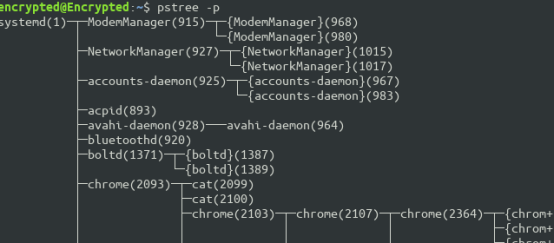
Percobaan 3 : Menampilkan Status Proses dengan Berbagai Format
Pindah ke command line terminal (tty2) dengan menekan Ctrl+Alt+F2 dan login ke terminal sebagai user.
Ketik ps –e | more dan tekan Enter. Opsi -e menampilkan semua proses dalam bentuk 4 kolom : PID, TTY, TIME dan CMD.
$ ps –e | more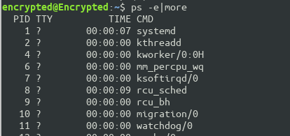 Jika halaman penuh terlihat prompt --More-- di bagian bawah screen, tekan q untuk kembali ke prompt perintah.- Ketik ps ax | more dan tekan Enter. Opsi a akan menampilkan semua proses yang dihasilkan terminal (TTY). Opsi x menampilkan semua proses yang tidak dihasilkan terminal. Secara logika opsi ini sama dengan opsi –e.
Terdapa 5 kolom : PID, TTY, STAT, TIME dan COMMAND.
$ ps ax | more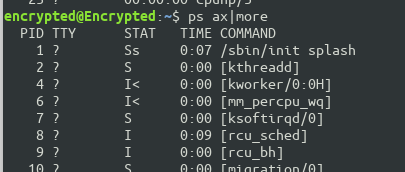 Jika halaman penuh terlihat prompt--More--di bagian bawah screen, tekanquntuk kembali ke prompt perintah. - Ketik ps –e f | more dan tekan Enter. Opsi –e f akan menampilkan semua
proses dalam format daftar penuh.
$ ps ef | more
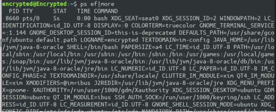
Jika halaman penuh terlihat prompt --More-- di bagian bawah screen,
tekan
quntuk kembali ke prompt perintah. - Ketik ps –eo pid, cmd | more dan tekan Enter. Opsi –eo akan menampilkan
semua proses dalam format sesuai definisi user yaitu terdiri dari kolom PID
dan CMD.
$ ps –eo pid,cmd | more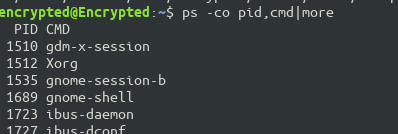 Jika halaman penuh e t rlihat prompt --More-- di bagian bawah screen, tekan q untuk kembali ke prompt perintah. Ketik ps –eo pid,ppid,%mem,cmd | more dan tekan Enter.
6.Akan menampilkan kolom PID, PPID dan %MEM. PPID adalah proses ID dari
proses parent.%MEM menampilkan persentasi memory system yang digunakan proses. Jika proses hanya menggunakan sedikit memory system
akan dita mpilkan 0.
$ ps –eo pid,ppid,%mem,cmd | more
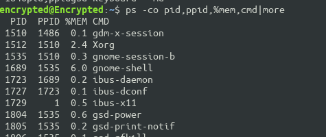
- Logout dan tekan Alt+F7 untuk kembali ke mode grafis
Percobaan 4 : Mengontrol proses pada shell
- Pindah ke command line terminal (tty2) dengan menekan Ctrl+Alt+F2 dan login ke terminal sebagai user.
- Gunakan perintah yes yang mengirim output y yang tidak pernah berhenti
$ yes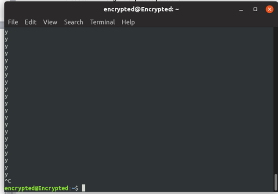 Untuk menghentikannya gunakan Ctrl-C. - Belokkan standart output ke /dev/null
$ yes > /dev/nullUntuk menghentikannya gunakan Ctrl-C. - Salah satu cara agar perintah yes tetap dijalankan tetapi shell tetap digunakan
untuk hal yang lain dengan meletakkan proses pada background dengan
menambahkan karakter & pada akhir perintah.
$ yes > /dev/null &Angka dalam ”[ ]” merupakan job number diikuti PID. 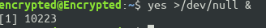 - Untuk melihat status proses gunakan perintah jobs .
$ jobs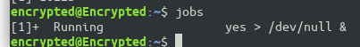 - Untuk menghentikan job, gunakan perintah kill diikuti job number atau
PID proses. Untuk identifikasi job number, diikuti prefix dengan karakter
”%”.$ kill %<nomor job>contoh : kill %1 - Lihat status job setelah diterminasi $ jobs